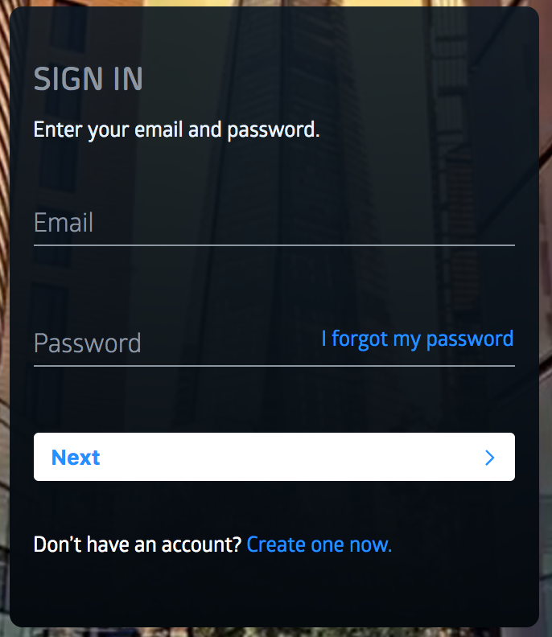
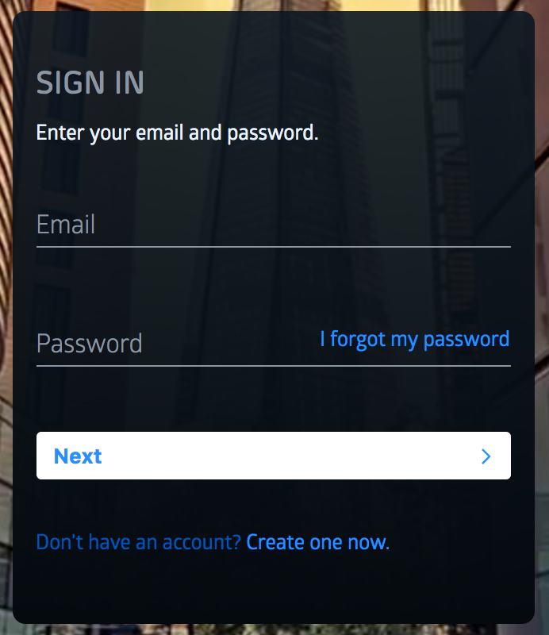

Visual Regression Testing
Hands-on introduction
Dario Banfi | dario.banfi@netlight.com
Why do I need it?
Design
After one month...
Visual comparison to see the effect of the changes I introduced
- Humans are bad at noticing change
- On big and complex project, changing CSS is RISKY
- Adding external dependencies can pollute CSS global namespace
Example:
Screenshot-based Regression Testing can offer:
- Quick iteration
- Safe refactoring
- No time spent on writing layout tests
- Integration in CI/CD Pipeline
- No more complaints from QA 😁
Visual Regression Testing Tools
- Galen
- Gemini
- PhantomCSS
- Wraith
And many many more... https://github.com/mojoaxel/awesome-regression-testing/

Galen Framework
https://github.com/galenframework/galen- Uses Selenium to interact with the page
- Runs in Selenium Grid
- Easy to setup responsive tests
- Can be run in the cloud (SauceLabs, BrowserStack, PerfectoMobile)
Let's get coding!
git clone https://github.com/dariobanfi/visual-regression-testing-talk
To run this code you will need chromedriver
brew install chromedriver